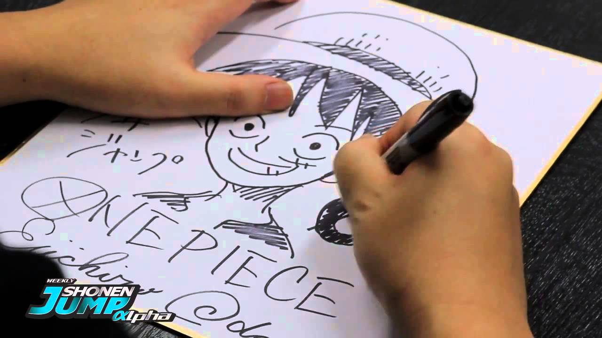

Eiichiro Oda, nacido el 1 de enero de 1975 en la prefectura de Kumamoto es un mangaka japonés, conocido por ser el creador del manga One Piece. Dado el gran éxito que One Piece ha cosechado es el creador de manga que más dinero ha ganado así como el que más copias ha vendido y es considerado, junto a Akira Toriyama, uno de los dibujantes más influyentes de la historia de Japón . Eiichiro Oda está casado con la ex modelo, actriz y "Race Queen" Chiaki Inaba desde el 7 de noviembre de 2004; con quien tiene dos hijas nacidas en 2006 y 2009.
